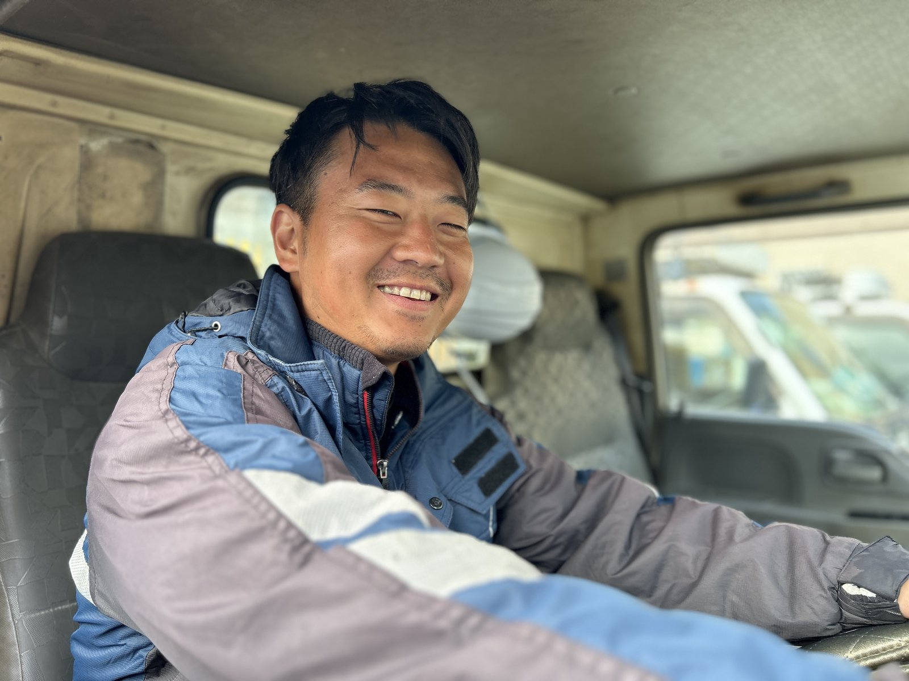
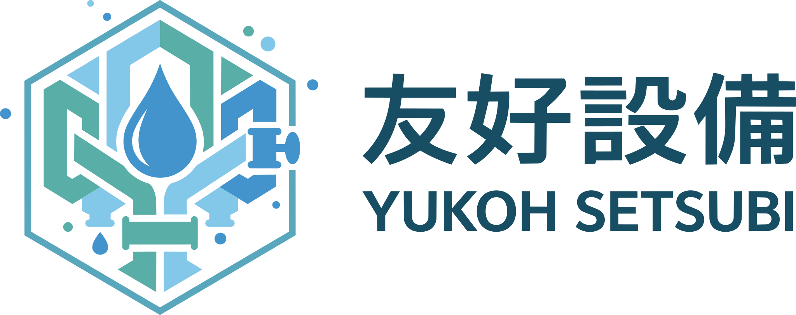
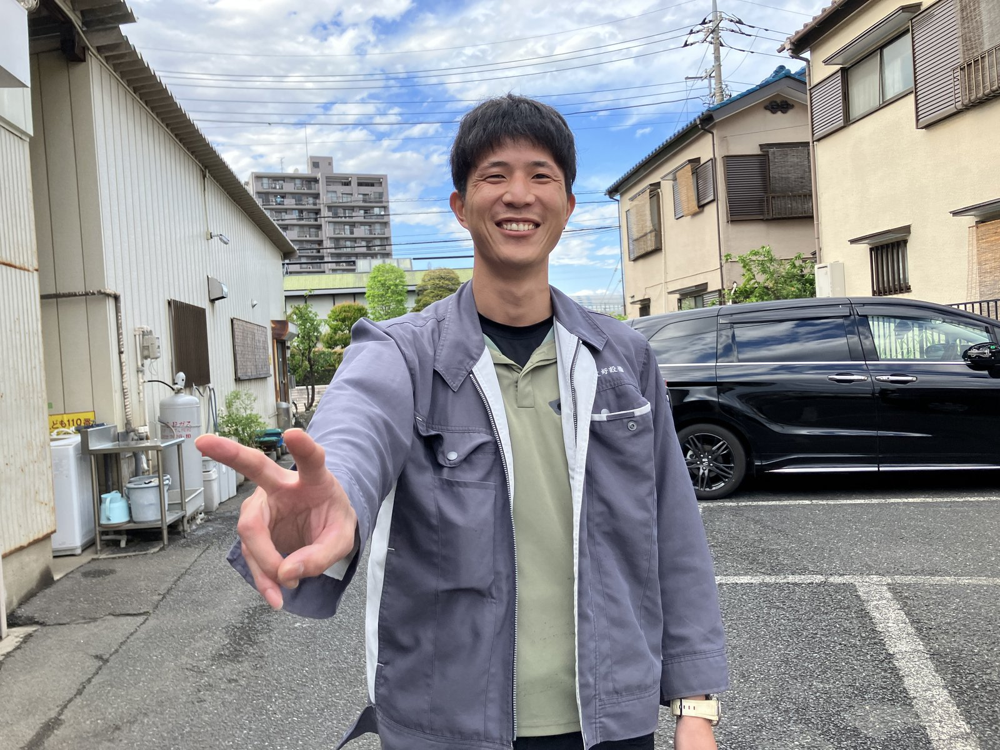
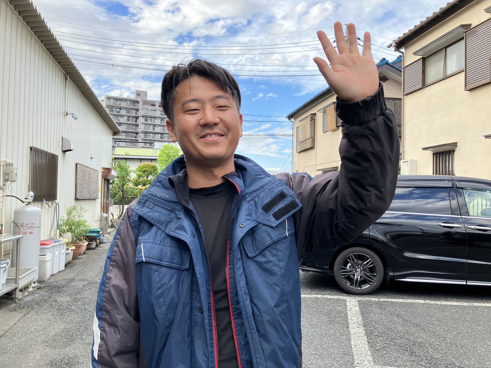
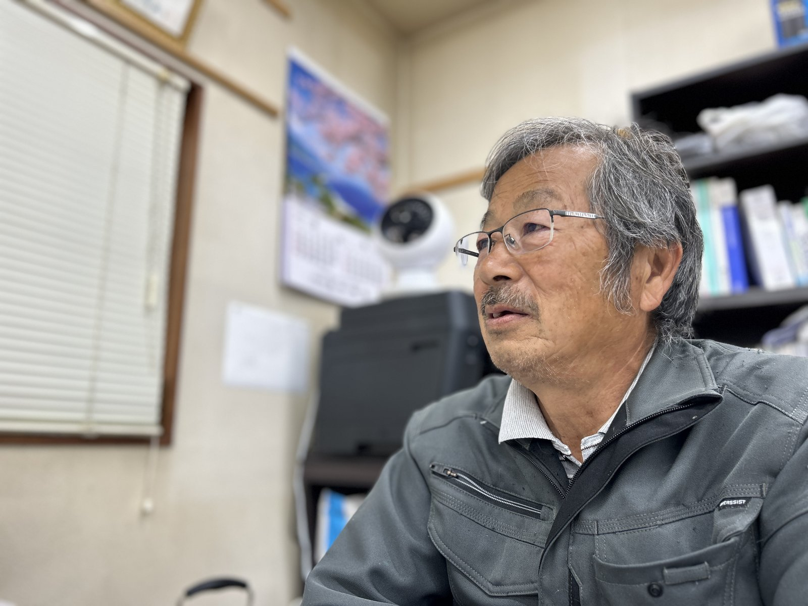
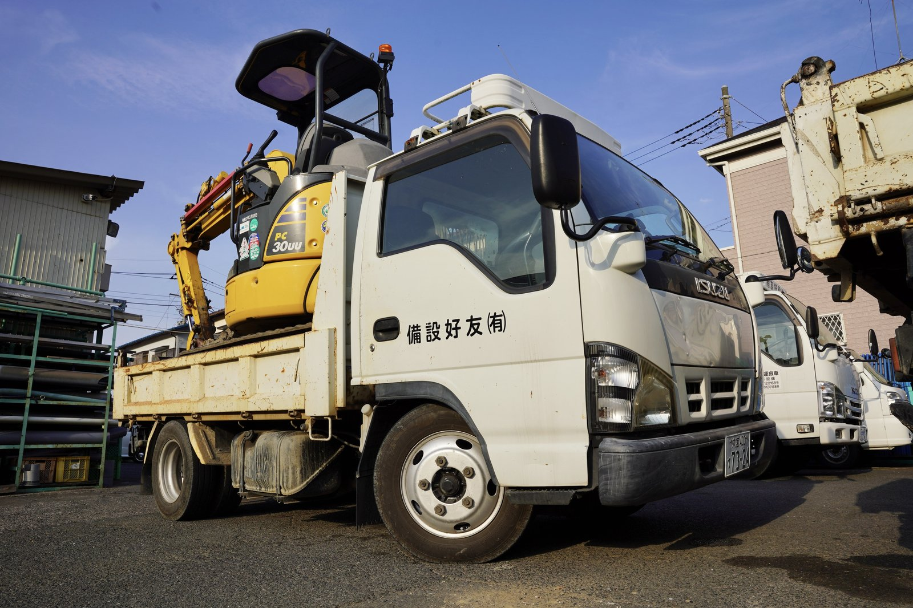
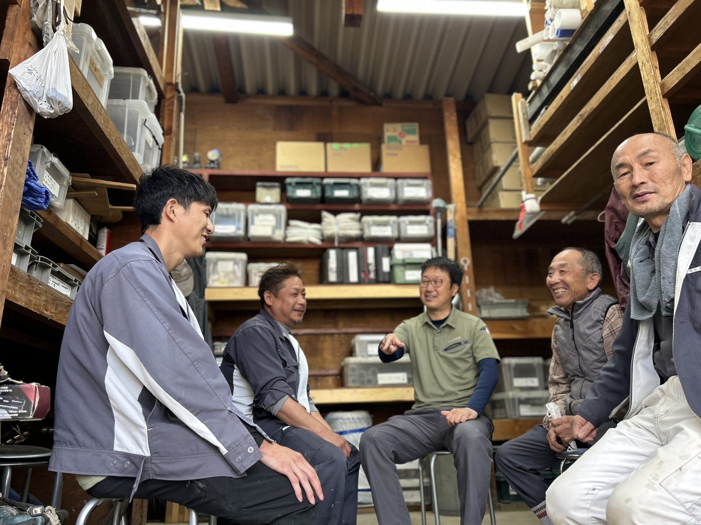
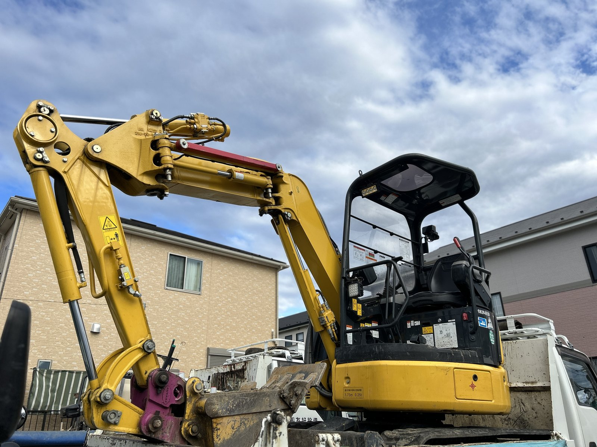

施工管理 / 14年目
T.S
家族のような会社、と言うけれど。
READ MORE→
RECRUIT採用サイト2026年度 上下水道工事スタッフ 採用エントリー受付中
川口市内 道路埋設配水管工事 受注のお知らせ
能登半島地震 給水・漏水応援対応に従事しました
About Yuko
People
気になる先輩のカードをタップして、ストーリーを覗いてみよう。

家族のような会社、と言うけれど。
READ MORE→
当番の電話が鳴ると、ちょっと誇らしい。
READ MORE→
冗談が通じる人なら、絶対に向いてる。
READ MORE→
川口の地面の下は、たいてい歩きました。
READ MORE→Job
公共9割の主力事業。本管・配水管・排水管の布設、街のライフラインを敷く仕事。
当番制で日曜祝日の漏水緊急対応に従事。能登半島地震の応援にも入りました。
現場全体の段取り、官公庁対応、書類作成まで。1級・2級管工事施工管理技士、歓迎。
入札書類・請求書・経理処理など、現場を支える事務職。少数精鋭のオフィスチーム。
A Day
本日の現場と段取り確認。身だしなみ・時間規律を整える、友好設備の文化です。
各チームで現場へ移動。社用車・駐車場完備。
近所のお弁当・定食屋で休憩。
3原則「出来ないと言わない／自己流にならない／面倒くさがらない」で動きます。
残業なしで完全退社。「休んだ方が仕事の質が上がる」社長の方針。
日曜祝日も漏水緊急対応の当番が回ります（手当別途）。能登応援も実績あり。
Welfare
受験料・講習費は全額会社負担。合格祝い金あり。
8:15〜17:15で完全退社。「休んだ方が仕事の質が上がる」社長の方針。
日曜祝日の漏水対応は当番制で手当別途。能登半島地震の応援対応も実績。
10周年では社員旅行でパラオ3泊4日。今でも評判が良く継続中。
駐車場完備（資材置き場約500坪）。社用車・作業着支給。
社長の趣味の畑（資材置き場内）でなす・トマト・きゅうり・インゲン・バナナ・柑橘類・ぶどう等を栽培。社員やお得意さんに評判です(笑)
Blog
現場や社内のリアルを、社員が発信中。



Company